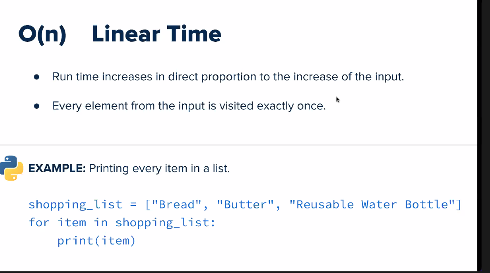

1. Encapsulation - is a concept of hiding data by wrapping up members into a single unit such as a Class. It provides security to data members by making the variable private, and then creating public getter/setter methods to access those variables.
const OverloadDemo = function () {
this.area = function (x, y) {
console.log('x = ', x);
if (!y) {
console.log('y is not provided');
return `\nThe area of the square is ${Math.pow(x, 2)} sq units`;
}
console.log('y = ', y);
return `\nThe area of the rectangle is ${x * y} sq units`;
};
};
- Getters: The get syntax binds an object property to a function that will be called when that property is looked up
- Setters: The set syntax binds an object property to a function to be called when there is an attempt to set that property
- Access Control - controls the access level; Non-Access Modifiers - do not control access level, but provides other functionality
- Access Modifiers - Properties and methods can have access modifiers which control where they can be accessed. There are three access modifiers:
- public - the property or method can be accessed from everywhere. This is default
- protected - the property or method can be accessed within the class and by classes derived from that class
- private - the property or method can ONLY be accessed within the class
- Class Binding - The binding means the process of converting identifiers into addresses. For each variables and functions this binding is done. For functions it is matching the call with the right function definition by the compiler
const obj = {
log: ['a', 'b', 'c'],
get latest() {
return this.log[this.log.length - 1];
}
};
console.log(obj.latest); // Expected output: 'c'
const language = {
set current(name) {
this.log.push(name);
},
log: []
};
language.current = 'EN';
language.current = 'FA';
console.log(language.log); // Expected output: Array['EN', 'FA']
2. Inheritance - the ability of creating a new class from an existing class. Inheritance is when an object acquires the property of another object. Inheritance allows a class (subclass) to acquire the properties and behavior of another class (super-class). It helps to reuse, customize and enhance the existing code.
- Hierarchical inheritance - JavaScript objects have a link to a prototype object. In an object literal like { a: 1, b: 2, __proto__: c }, the value c (which has to be either null or another object) will become the [[Prototype]] of the object represented by the literal, while the other keys like a and b will become the own properties of the object.
- Parent Class vs. Child Class -Create a class named "Model" which will inherit the methods from the "Car" class, by using the extends keyword. By calling the super() method in the constructor method, we call the parent's constructor method and gets access to the parent's properties and method
class Car {
constructor(brand);
this.carname = brand;
}
present() {
return 'I have a ' + this.carname;
}
}
class Model extends Car {
constructor(brand, mod) {
super(brand);
this.model = mod;
}
show() {
return this.present() + ', it is a ' + this.model;
}
}
3. Abstraction – Partially built, or incomplete classes which can serve as a foundation for other classes.
- Interfaces - In Object Oriented Programming Languages. An interface is a programming structure/syntax that allows the computer to enforce certain properties on an object (class). For example, say we have a car class and a scooter class and a truck class. Each of these three classes should have a start_engine() action.
- Abstract classes - is a template definition of methods and variables in a specific class, or category of objects

- Abstract Methods - a method that is declared, but not implemented in the code. Abstract classes and methods are when the parent class has a named method, but need its child class(es) to fill out the tasks
- Constructors - is a special type of function called to create an object. It prepares the new object for use, often accepting arguments
- Default Constructors - If the programmer does not supply a constructor for an instantiable class, Java compiler inserts a default constructor into your code on your behalf.
// Create a constructor function called 'Developer' that takes in 'name' and 'tech'
function Developer(name, tech) {
this.name = name;
this.tech = tech;
// Include a method called 'introduction()' that introduces the Developer with their name and favorite tech
this.introduction = () => {
console.log(`Hi, my name is ${this.name} and I love ${this.tech}!`);
};
}
// Create a new object using the 'Developer' constructor
const oliver = new Developer('Oliver', 'OOP');
const norberto = new Developer('Norberto', 'Javascript');
const osiris = new Developer('Osiris', 'Python');
// Call the 'introduction()' method on the new object
oliver.introduction();
norberto.introduction();
oriris.introduction();
4. Polymorphism – Stems from Inheritance. A subclass can define its own unique behavior and still share the same functionalities or behavior of its parent/base class. A subclass can have their own behavior and share some of its behavior from its parent class not the other way around. A parent class cannot have the behavior of its subclass
- Method Overriding -a language feature that allows a subclass or child class to provide a specific implementation of a method that is already provided by one of its superclasses or parent classes.
- Method Overloading - is a form of polymorphism in OOP. Polymorphism allows objects or methods to act in different ways, according to the means in which they are used.
- Runtime vs Compile-time - Compile time is the period when the programming code (such as C#, Java, C, Python) is converted to the machine code (i.e. binary code). Runtime is the period of time when a program is running and generally occurs after compile time.
- Covariance vs Contravariance -Frequently it seems like it would be nice if when a method is overridden we could change the argument types or return types. A change that moves down the inheritance hierarchy, making it more specific, is said to be covariant. A change that moves up the inheritance hierarchy is said to be contravariant.
- Classes - What is a polymorphic class? A class that declares or inherits a virtual function
- Properties - are as in everyday language and technically are fields of objects/classes with dedicated getter/setter routines (which can be considered as methods. There are languages that don't have properties and this behavior is achieved using a private field+get/set methods.)
- Parameters - a special kind of variable used in a function to refer to one of the pieces of data provided as input to the functio
const MethodOverloading = function () {
this.area = function (side1, side2, side3) {
console.log('side1 = ', side1);
console.log('side2 = ', side2);
if (!side3) {
console.log('side3 of the triangle is not provided');
return `\nThe area of the triangle is ${Math.sqrt(side1*side1 + side2*side2)} sq units`;
}
const s = (side1 + side2 + side3) / 2;
console.log('s = ', s);
return `\nThe area of the triangle is ${ Math.sqrt(s * (s - side1) * (s - side2) * (s - side3))}sq units`;
};
};

class Parent {
void test (covar : Mammal, contravar : Mammal) : boolean
}
class Child extends Parent {
void test (covar : Cat, contravar : Animal) : boolean
}
While appealing, this idea runs into trouble with the principle of substitution.
Parent aValue = new Child();
aValue.text(new Dog(), new Mammal()); // is this legal??
class Marker():
@property
def marker_color(self):
return self._marker_color
@color.setter
def color(self, color):
self._marker_color = Blue
self._marker_color = Red

Some of The Most Important SQL Commands SYNTAX
- SELECT - extracts data from a database
- UPDATE - updates data in a database
- DELETE - deletes data from a database
- INSERT INTO - inserts new data into a database
- CREATE DATABASE - creates a new database
- ALTER DATABASE - modifies a database
- CREATE TABLE - creates a new table
- ALTER TABLE - modifies a table
- DROP TABLE - deletes a table
- CREATE INDEX - creates an index (search key)
- DROP INDEX - deletes an index
The PRIMARY KEY - constraint uniquely identifies each record in a table. Primary keys must contain UNIQUE values, and cannot contain NULL values.
A FOREIGN KEY - is a field (or collection of fields) in one table, that refers to the PRIMARY KEY in another table. The table with the foreign key is called the .
NORMALIZATION - is the process of organizing data in a database. This includes creating tables and establishing relationships between those tables according to rules designed both to protect the data and to make the database more flexible by eliminating redundancy and inconsistent dependency.
Data Structure
- A way of storing data so that it can be used efficiently by the computer or browser.
- It is built upon simpler primitive data types (like variables).
- It is non-opinionated, in the sense that it is only responsible for holding the data.
- ARRAYS - a linear data structure that collects elements of the same data type and stores them in contiguous and adjacent memory location
- var favFoods = ["Pickles", "Onions", "Carrots"]
- ARRAYLIST - resizable array data structure that implements the List interface
- LINKEDLIST - is a dynamic data structure, which means that the size of the list can change at run time.
- HASH TABLE - is a data structure which stores data in an associative manner. In a hash table, data is stored in an array format, where each data value has its own unique index value. Access of data becomes very fast if we know the index of the desired data.

Define
- If - the most common type of conditional statement if...else
- else - Basic if...else syntax looks like this: if (condition) {
- /* code to run if condition is true */
- } else {
- /* run some other code instead */
- var studentNames = ['Jack', 'John', 'Craig', 'Roman'];
- for (var i = 0; i < studentNames.length; i++)
- console.log(studentNames[i])
- while loops -
- var a = 100;
- var b = 10;
- var c = '10'
- var myName; // undefined
- console.log(a + b); // 100
- console.log(a - b); // 90
- console.log(a / b); // 10
- console.log(a * b); // 1000
- // Modulus return the remainder between two numbers
- console.log(a % b); // 0
- Equal( == ) Returns true if the operands are equal var1 == 3 var1 == '3' 3 == '3'
- Not equal (!= ) Returns true if the operands are equal and of the same type. var1 != 4
- Strict equal ( === ) Returns true if the operands are equal and of the same type var1 === 3
- Strict not equal ( !== ) Returns true if the operands are of the same type but not equal, or are of different type var1 !== '3'
- Exception Handling - The try statement allows you to define a block of code to be tested for errors while it is being executed. The catch statement allows you to define a block of code to be executed, if an error occurs in the try block.
- try {
Block of code to try
}
catch(err) {
Block of code to handle errors
} - Increment Operators – The increment (++) operator increments (adds one to) its operand and returns the value before or after the increment, depending on where the operator is placed.
- x++
- ++x
for loops -We use a for loop to execute code more than once
Mathematical Operations - Arithmetic operators combine with numbers to form an expression that returns a single number
Comparison Operations -
Computer Science Concepts
- Algorithms - We will learn about algorithms and how to gauge their performance
- Data Structures - We will learn about data structures and how they are implemented in JavaScript.
Big O Notation
- Big O notation helps us describe how runtime will scale when we increase input size (n).
- It is denoted with a capital O alongside the growth factor (in parentheses)
- Example: The time complexity of simple search is O(n)
- Constant Time
- Linear Time 
- Quadratic Time